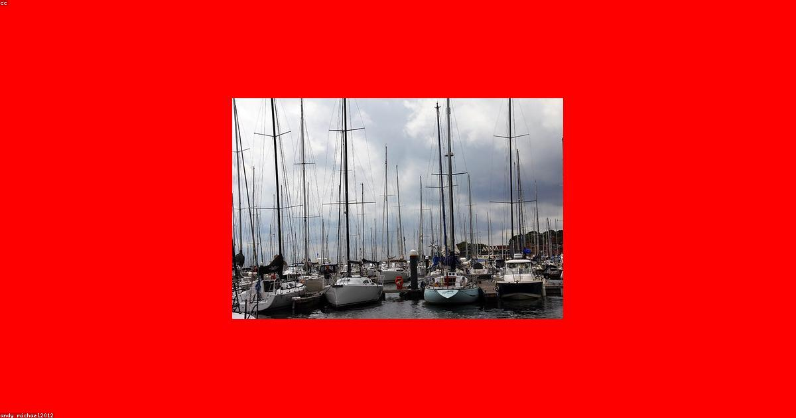

La cubierta de espuma marina — también conocida como foam deck, EVA foam deck o cubierta de espuma EVA — es hoy la alternativa más popular a la cubierta de teca en el mercado náutico colombiano. Y las razones son claras: es antideslizante, aísla del calor extremo, resiste el agua salada indefinidamente y, lo más valorado por los propietarios de botes en Cartagena, no requiere mantenimiento.
En esta guía explicamos qué es exactamente la cubierta de espuma marina, en qué se diferencia del PVC sintético, dónde se instala en la embarcación, cómo se cuida y por qué el clima tropical del Caribe la convierte en la opción más práctica para la mayoría de embarcaciones en Cartagena.
¿Qué es la Cubierta de Espuma Marina?
La cubierta de espuma marina está fabricada en EVA (etileno-vinilo-acetato), un polímero sintético de alta densidad que en su versión marina se formula con estabilizadores UV, antifúngicos y agentes resistentes al agua salada. A diferencia del EVA industrial o deportivo, el EVA marino está diseñado para soportar:
- Exposición solar continua durante años (protección UV clase IV o superior)
- Inmersión periódica y salpicaduras de agua salada
- Temperaturas de cubierta de hasta 70°C bajo el sol tropical
- Pisadas frecuentes, arrastre de equipos y carga de anclas
- Combustibles, aceites y productos de limpieza marina
El resultado es un material suave y acolchado al tacto, con texturas antideslizantes permanentes que no dependen de aceites, barnices ni tratamientos adicionales.
¿Por Qué la Cubierta de Espuma es Ideal para el Caribe?
El Caribe colombiano impone condiciones que pocos materiales toleran bien a largo plazo. La cubierta de espuma EVA marina tiene ventajas específicas para este clima:
Control de Temperatura: La Ventaja Más Importante
En agosto en Cartagena, una cubierta de fibra de vidrio sin revestimiento puede alcanzar 65-70°C. Caminar descalzo sobre ella es imposible e incluso doloroso. La espuma EVA aísla térmicamente de la siguiente manera:
- Su estructura celular cerrada atrapa aire, creando una barrera térmica natural
- No conduce el calor como el metal, el GRP o el aluminio
- En condiciones equivalentes, la cubierta de espuma permanece 15-25°C más fresca que la fibra desnuda
Esto no es solo comodidad: es seguridad. Las quemaduras de cubierta son más frecuentes de lo que se reconoce en el ambiente náutico, especialmente en niños a bordo.
Antideslizante Permanente en el Caribe Mojado
En el Caribe, la cubierta siempre está mojada: aguaceros repentinos, olas de costado, manguerazos en maniobras. La espuma EVA marina tiene texturas antideslizantes permanentes moldeadas en el material — no son tratamientos superficiales que se desgastan. Mantienen el agarre igual en seco que en mojado.
Resistencia al Agua Salada y Organismos Marinos
El EVA marino no absorbe agua. Tampoco permite el crecimiento de algas, hongos ni bacterias en su superficie, gracias a los aditivos antimicrobianos de los materiales de calidad. Esto es especialmente importante para plataformas de popa en contacto permanente con el agua de mar.
Zonas de la Embarcación Donde Instalamos Cubierta de Espuma
Cubierta Principal Completa
La instalación más común: reemplazar toda la cubierta de trabajo del yate con espuma EVA marina. Cubre el área principal de desplazamiento de tripulación y pasajeros. Requiere medición precisa, corte a medida y adhesivo marino de doble componente.
Plataforma de Popa (Swim Platform)
La plataforma de popa es el área más demandante: tráfico constante, contacto con el agua, escalada de buceadores. La espuma EVA marina es el material estándar para swim platforms en yates modernos por su antideslizante superior y resistencia al agua permanente.
Alas del Puente de Mando y Flybridge
Las zonas de descanso del flybridge están expuestas directamente al sol todo el día. La espuma EVA con colores claros (beige, gris claro) refleja el calor y hace estas áreas cómodas incluso en horas pico de radiación.
Proa y Zona de Fondeo
En la proa, donde la tripulación trabaja con ancla y cabos, la seguridad antideslizante es crítica. La espuma EVA en esta zona reduce significativamente el riesgo de resbalones en maniobras de fondeo.
Escaleras de Acceso
Los peldaños de escalera mojados son uno de los puntos más peligrosos de cualquier embarcación. La espuma EVA con ranuras antideslizante en escaleras de acceso interno y externo es una mejora de seguridad de bajo costo y alto impacto.
Cómo se Instala la Cubierta de Espuma Marina
La instalación correcta de la cubierta de espuma es determinante para su durabilidad. En Colombia Boat Detailing el proceso tiene cuatro fases:
- Medición y plantillas: Trazamos plantillas exactas de la cubierta, incluyendo todos los accesorios, escotillas y bornes. La precisión en esta etapa evita cortes incorrectos y desperdicio de material.
- Preparación de la superficie: Lijado suave para crear micro-textura de adhesión, limpieza con desengrasante marino y aplicación de primer específico para EVA/GRP. Este paso es el más crítico — una superficie mal preparada lleva al desprendimiento.
- Corte y ajuste del EVA: Corte con herramientas de precisión. Las curvas, ángulos y recortes se hacen con cuidado milimétrico para que cada pieza encaje perfectamente sin huecos.
- Pegado y sellado: Adhesivo marino de doble componente bajo presión uniforme. Sellado de todos los bordes y juntas con Sikaflex marino para impermeabilización total. El curado toma 24-48 horas dependiendo de la temperatura y humedad.
Mantenimiento de la Cubierta de Espuma
Este es el punto donde la cubierta de espuma supera radicalmente a la teca natural. El mantenimiento es mínimo:
- Lavado con agua dulce: Después de cada salida marina, enjuague con agua dulce para remover la sal. La sal cristalizada en los poros del EVA puede manchar con el tiempo.
- Limpieza mensual: Jabón neutro (pH 7) y cepillo suave de cerdas medias. Para manchas de grasa o aceite, desengrasante marino diluido. Nunca solventes (acetona, thinner, alcohol) que degradan el adhesivo.
- Inspección de bordes: Una vez al año, revisa los bordes y los puntos de unión. Un borde que empieza a levantarse se repega fácilmente con adhesivo marino; ignorarlo lleva a que el agua se infiltre y el problema se extienda.
- Protector UV opcional: Algunos propietarios aplican protector UV en spray para espumas marinas una vez al año. No es indispensable con materiales de calidad, pero puede extender la vida del color.
Lo que nunca debes hacer con cubierta de espuma: No uses detergentes con solventes, lejía concentrada ni acondicionadores de plástico (como el Armor All). Estos productos degradan el EVA y el adhesivo desde adentro. El jabón neutro y el agua son suficientes para el 95% de las situaciones.
Cubierta de Espuma vs Cubierta Sintética PVC: ¿Cuál Elegir?
Muchos propietarios nos preguntan la diferencia entre la cubierta de espuma EVA y la cubierta sintética de PVC (que imita la teca). Son materiales diferentes con usos distintos:
- Espuma EVA: Más suave y acolchada, mejor aislamiento térmico, más liviana, ideal para zonas de uso recreativo, plataformas de natación y embarcaciones deportivas. Duración: 10-15 años (premium hasta 20).
- Cubierta sintética PVC: Más rígida, aspecto más cercano a la teca natural (con tablillas y mastico negro), mayor durabilidad (15-20 años), ideal para yates de representación donde la estética de teca importa pero no el mantenimiento.
Instalamos ambos tipos y podemos combinarlos: espuma EVA en plataformas y zonas de descanso, PVC sintético en cubierta de trabajo donde se busca la estética de teca.
Instala Cubierta de Espuma en tu Embarcación en Cartagena
Cotización gratuita con visita técnica incluida. Te explicamos el material, el proceso y el precio exacto para tu embarcación.